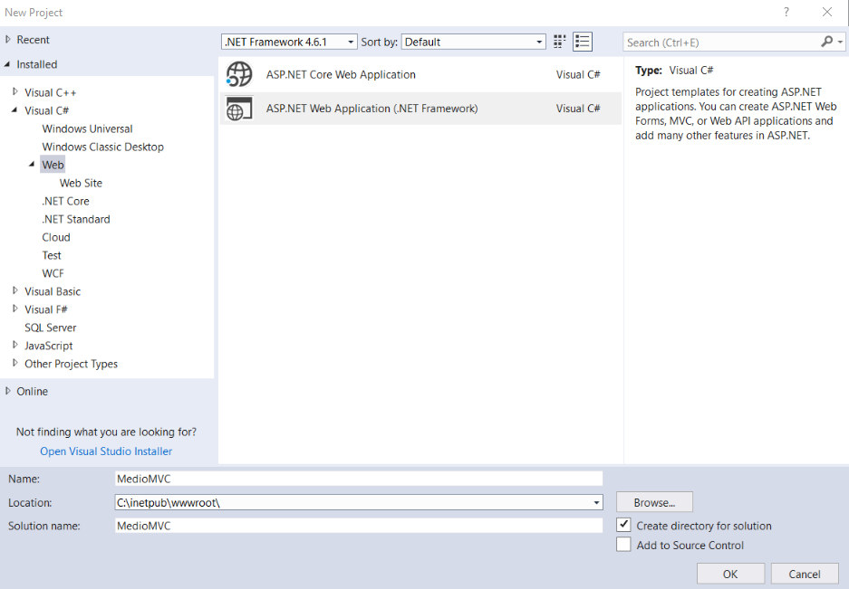
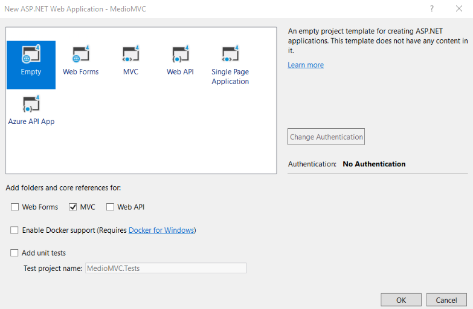

Creating a new MVC application
This page is a part of a tutorial, which you should follow sequentially, from the beginning to the end. Go to the first page: Getting started with Kentico.
Creating the MVC application project
Create a new project in Visual Studio.
Select the ASP.NET Web Application (.NET Framework) project template.
Enter MedioMVC as the project's name.
Select a location for your project.
To prevent conflicts in permissions, we recommend that you save your MedioMVC tutorial project in the same folder where you have installed Kentico 11, for example: C:\inetpub\wwwroot\

In the next step, choose the Empty template option.
Select the MVC checkbox to add folders and core references for MVC.

Installing Kentico integration packages
To help you start developing the MVC application, Kentico provides integration (NuGet) packages you can install through Visual Studio. For the functionality covered in this tutorial, you need to install the Kentico.Web.Mvc and Kentico.Content.Web.Mvc packages.
In Visual Studio, right-click the MedioMVC project and select Manage NuGet Packages.
Search for the Kentico.Web.Mvc package (on the Browse tab).
Confirm the installation of Kentico.Web.Mvc NuGet package and all its dependencies.
Use the same process to install the Kentico.Content.Web.Mvc package.
The Kentico.Web.Mvc package contains the necessary items which will make your MVC application work with the Kentico application. The additional Kentico.Content.Web.Mvc NuGet package contains API that will enable previewing of pages in the administration interface.
To ensure that these items work in your MedioMVC solution, you need to configure several key elements in your MVC project.
Enabling Kentico integration packages
In the App_Start folder, edit the ApplicationConfig.cs file. The class was added to your project automatically by the Kentico.Web.Mvc integration package.
Add a using statement for the Kentico.Content.Web.Mvc namespace and call builder.UsePreview() in the RegisterFeatures method.
usingKentico.Web.Mvc;usingKentico.Content.Web.Mvc;namespaceMedioMVC{publicclassApplicationConfig{publicstaticvoidRegisterFeatures(ApplicationBuilder builder){builder.UseDataAnnotationsLocalization();builder.UseNotFoundHandler();// Enables the Preview mode functionality, which allows your website editors to preview// the content of the MVC site's pages from the Kentico user interface.builder.UsePreview();}}}Save your changes.
Edit your project's Global.asax file.
Add a using statement for the Kentico.Web.Mvc namespace.
In the Application_Start method, call the ApplicationConfig.RegisterFeatures(ApplicationBuilder.Current) method.
usingSystem.Web.Mvc;usingSystem.Web.Routing;usingKentico.Web.Mvc;namespaceMedioMVC{publicclassMvcApplication : System.Web.HttpApplication{protectedvoidApplication_Start(){AreaRegistration.RegisterAllAreas();RouteConfig.RegisterRoutes(RouteTable.Routes);// Enables and configures the selected Kentico ASP.NET MVC integration features for the MedioMVC applicationApplicationConfig.RegisterFeatures(ApplicationBuilder.Current);}}}Save your changes.
By adding the ApplicationConfig.RegisterFeatures(ApplicationBuilder.Current) method to the Global.asax file, you have made sure that your configuration in ApplicationConfig.cs will be executed on the application start. Your MedioMVC project is now ready for integration with the Kentico instance. To find out about more about the integration packages you have installed, see Installing Kentico integration packages.
Connecting the MVC application to the database
Navigate to the web.config file of your Kentico project and open it in a text editor. The web.config file is located in the ProjectName/CMS folder, e.g., C:\inetpub\wwwroot\Kentico11\CMS.
Locate the <connectionStrings> element in the Kentico web.config file
Copy the exact connection string from the Kentico web.config file into the <connectionStrings> element in your MedioMVC project's web.config file.
Save your changes.
<?xml version="1.0" encoding="utf-8"?>
<configuration>
...
<!--
The MVC application will use the database of your Kentico instance
Change the values of database, server, user id and password to your match your connection string
-->
<connectionStrings>
<add name="CMSConnectionString" connectionString="Persist Security Info=False;database=Kentico11;server=myserver;user id=username;password=mypassword;Current Language=English;Connection Timeout=120;" />
</connectionStrings>
...
</configuration>
Configuring the hash salt key
Some Kentico features utilize hashing (macros, preview URLs, etc.). To ensure correct behavior of the system, both the MVC and Kentico applications need to generate hashes using the same salt value.
Navigate to the Kentico web.config file.
Locate CMSHashStringSalt among the <appSettings> keys.
Copy the value of the CMSHashStringSalt key into the same key in the MedioMVC project's web.config (the hash salt value is empty in the default web.config).
<!-- Example of app settings in the MedioMVC project with the "CMSHashStringSalt" key --><configuration><appSettings><addkey="webpages:Version"value="3.0.0.0"/><addkey="webpages:Enabled"value="false"/><addkey="ClientValidationEnabled"value="true"/><addkey="UnobtrusiveJavaScriptEnabled"value="true"/><!-- CMSHashStringSalt key --><addkey="CMSHashStringSalt"value="0bc1b86a-3fc8-4305-a8c3-20f5141aaf0a"/></appSettings>Save your changes.
Your applications now use the same hash salt value. For example, in this tutorial, the identical hash salts allow page preview URLs to work correctly. The hash salt configuration also enables other features not covered by the tutorial, for example resolving of macros in emails based on templates, which are defined in the Kentico administration interface, but actually sent by the MVC application in response to live site user actions.
Mapping Kentico URL routes
The Kentico API uses HTTP handlers with specific URLs to retrieve content and perform various other functions (for example /getmedia and /getattachment handlers that display images and other file content). To make sure your MVC application directs such URLs to the appropriate handlers, you need to register Kentico specific routes in your MVC application's route table.
Kentico routes must be mapped before you map other more general routes for your site's content. Otherwise the URLs of Kentico HTTP handlers could match your custom routes, which would result in missing content or incorrect behavior.
In Visual Studio, edit the RouteConfig.cs file in the App_Start folder.
Add a using statement for the Kentico.Web.Mvc namespace.
Call the Kentico().MapRoutes method above the Default MapRoute method.
usingSystem.Web.Mvc;usingSystem.Web.Routing;usingKentico.Web.Mvc;namespaceMedioMVC{publicclassRouteConfig{publicstaticvoidRegisterRoutes(RouteCollection routes){routes.IgnoreRoute("{resource}.axd/{*pathInfo}");// Maps routes to Kentico HTTP handlersroutes.Kentico().MapRoutes();...Save your changes
By mapping the Kentico routes, you have made sure that Kentico HTTP handlers will work correctly on your MVC site. Remember that you have to call the Kentico().MapRoutes method before you map other more general routes for your site's content.
Enabling class discovery
You will often need to extend your MVC project by adding and registering classes. For example, later in the tutorial you will generate classes representing page types and add them to your MVC project.
Kentico application code uses a discovery process to detect various types of registered classes during initialization. For performance reasons, only code assemblies that are marked as discoverable are processed. As a result, you need to make sure the assembly compiled from your MVC project is discoverable.
In Visual Studio, open the Properties folder.
Create a new class, for example named WebAssemblyInfo.cs.
Add the following into the class:
a using statement for the CMS namespace.
the [assembly: AssemblyDiscoverable] attribute.
usingCMS;// Ensures that the Kentico API can work correctly with generated and custom classes registered in the MVC project[assembly: AssemblyDiscoverable]Save your changes.
By adding the AssemblyDiscoverable attribute, you ensure that the Kentico discovery process includes your MVC project's code assembly. This allows the application to work with various types of custom components added by developers (such as generated classes for page types).
The attribute is placed into a separate class because the default AssemblyInfo class cannot access code from external libraries in cases where the web project is precompiled with outputs merged into a single assembly (during deployment).